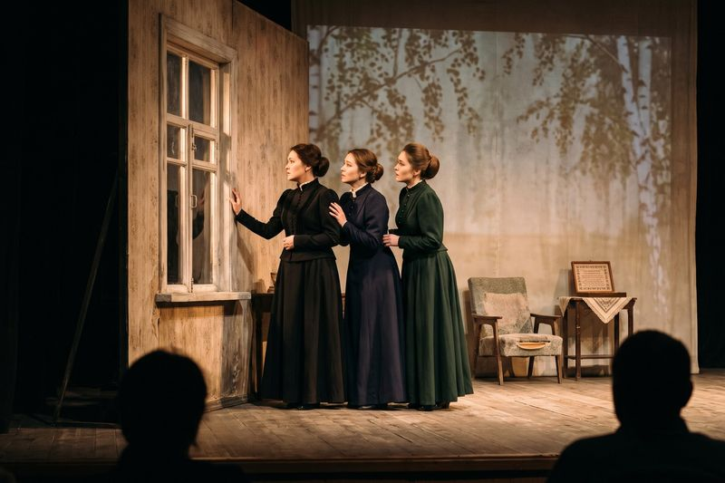

Репертуар

«Три сестры», 2023.
Без вины виноватые
«Без вины виноватые»
А. Н. Островский
А. Н. Островский
Премьера 15.10.2026. Реж. Вероника Полищук. Кручинина — з. а. Ирада Мамедова, Незнамов — Артём Бондаренко.
Три сестры
«Три сестры»
А. П. Чехов
А. П. Чехов
Премьера 2023. Реж. Вероника Полищук. Ольга — Наталья Ким, Маша — Алина Сейткулова, Ирина — Дарья Гуревич.
Старший сын
«Старший сын»
А. Вампилов
А. Вампилов
Реж. Олег Тарасенко. Сарафанов — н. а. Виктор Голубев.
Ревизор
«Ревизор»
Н. В. Гоголь
Н. В. Гоголь
Реж. Вероника Полищук. Хлестаков — Артём Бондаренко, Городничий — Валерий Пак.
На дне
«На дне»
М. Горький
М. Горький
Реж. Олег Тарасенко. 16+.
Двенадцать месяцев
«Двенадцать месяцев»
С. Маршак
С. Маршак
Детский спектакль. По воскресеньям в 12:00.
«Вишнёвый сад» (2012) сыгран более 200 раз за десять сезонов и снят с репертуара в 2022 году.